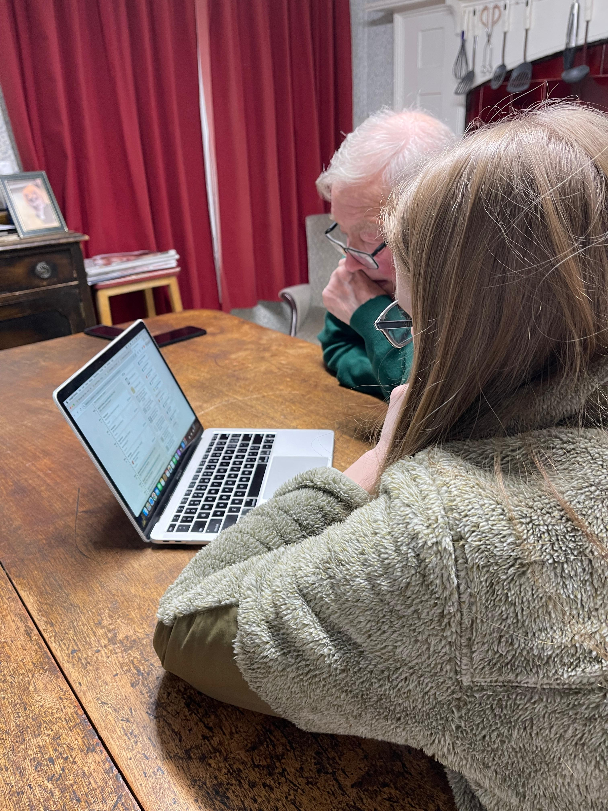

Starting a family tree does not require a subscription, a DNA test or a perfectly organised box of documents. The best place to begin is with what you already know, then use conversations and records to confirm — or correct — each generation.
Work from the known towards the unknown. Start with yourself or a well-documented parent or grandparent, and do not jump to an earlier person simply because the surname and place look right.
Start with what you know
Write down the names, dates, places and relationships you already know for yourself, your parents and grandparents. Add aunts, uncles and great-grandparents where possible. Do not worry if some dates are approximate or some spellings are uncertain: mark them as estimates rather than leaving the clue out.
Include maiden names, middle names, nicknames and previous married names. A place can be as broad as a country or as specific as a street, farm, parish or cemetery. The smaller and more accurate the place, the easier it will be to distinguish your relative from someone with the same name.
A five-minute starter note
[Full name] was born about [year] in [place]. Their parents may have been [names]. They married or lived with [name], and known children or siblings included [names]. This information came from [person, document or memory].
Ask your family — including about the uncertain stories

Parents, grandparents, aunts, uncles, cousins and family friends may remember names, relationships and places that never appeared in an official record. Ask older relatives about their grandparents and great-grandparents, but also ask what they heard while growing up.
A family story does not have to be completely accurate to be useful. Different versions may preserve a surname, occupation, migration route, military connection or place that leads to a record. Treat the story as a clue, record who told it to you and keep the different versions separate until evidence shows what happened.
Questions that often unlock useful details
- What were your parents' and grandparents' full names?
- Did anyone use a nickname or a different surname?
- Where did the family live before moving here?
- What jobs, trades or military service do you remember?
- Which churches, schools, clubs or communities were important?
- Who were the relatives who visited or wrote most often?
- Were there adoptions, stepfamilies or relatives raised elsewhere?
- Which family stories did adults repeat when you were young?
Note the interviewee's name, the date of the conversation and whether they witnessed the event themselves or heard it from someone else. With permission, an audio recording can preserve the voice as well as the facts.
Gather family documents, photographs and keepsakes
Before searching online, look at what your family already owns. A single obituary may name siblings and married daughters. The reverse of a photograph may identify a studio or address. A baptism card, funeral notice or old envelope may point to a church, cemetery or town you did not know about.
- Birth, baptism, marriage, death and burial records
- Obituaries, funeral cards and newspaper cuttings
- Photographs, albums and captions
- Family Bibles, prayer books and memorial books
- Letters, postcards, diaries and address books
- Passports, identity papers and naturalisation documents
- Military papers, medals and service photographs
- School, employment, property and legal documents
Photograph or scan both sides of every item. Give the image a useful filename, record who owns the original and do not write directly on historic photographs or documents. When a relative identifies people in a photograph, write down who made the identification and when.
Create a simple working tree
You can begin on paper, in a spreadsheet, in desktop genealogy software or on an online family-tree platform. The tool matters less than keeping each person distinct, showing relationships clearly and recording where each fact came from.
Think of the first version as a working tree, not a finished statement. Mark uncertain facts with words such as “about”, “possibly” or “reported by”. Avoid turning an estimate into an exact date simply because a website requires a date field.
| Person | Event | Date | Place | Source | Confidence |
|---|---|---|---|---|---|
| Example: Margaret Brown | Birth | About 1932 | Carlisle? | Daughter's memory | Unconfirmed |
| [Name] | [Birth / marriage / death] | [Date or estimate] | [Place] | [Who or what says this?] | [Confirmed / likely / clue] |
| [Name] | [Event] | [Date] | [Place] | [Source] | [Confidence] |
When you are ready to organise a larger tree, my family tree research service explains how I build and review trees using verifiable records and source citations.
Search genealogy records one person at a time
Choose a parent or grandparent whose identity you already know and search for one event or household. Enter a name, an approximate year and a place. Add a spouse, parent or child if the name is common. Search results should help you test the information in your working tree — not simply give you more names to collect.
FamilySearch
Free to create and use, with historical records, a catalogue and a large shared family tree. Treat other users' tree contributions as clues and check the attached records yourself. Some images have access restrictions.
Ancestry
Useful for building a tree alongside records from many countries. Hints can be helpful leads, but each suggested record and every connection from another tree still needs to be evaluated.
Findmypast
Strong for British and Irish records, newspapers and the 1921 Census of England and Wales. It was the first online home of that census and had exclusive access for its first three years.
Official sites, libraries and archives
Civil-registration offices, national archives, local record offices, libraries, churches and specialist websites may hold records that do not appear in a general database — or may provide a clearer original image.
A simple search sequence
- Start broad. Search the surname, approximate year and place before adding every detail.
- Try variants. Names may be misspelled, anglicised, abbreviated or indexed incorrectly.
- Search relatives. A spouse, child or sibling may be easier to find than the person you started with.
- Open the original. Read the whole page or image, not only the search-result summary.
- Record the source. Save the collection, date, place, reference, image and website.
The name may be indexed incorrectly, the collection may not be searchable, the event may have happened in a neighbouring place or the record may survive only in an archive. Browse collections and catalogues as well as search boxes.
Use records to test every connection
A record can support your family information, contradict it or reveal that two similar people have been confused. Before attaching it, ask why it belongs to your relative and whether it fits the rest of the evidence.
- Does the age fit other records?
- Is the place consistent or reasonably close?
- Are the spouse, parents or children correct?
- Does the occupation make sense?
- Can the address be followed across time?
- Are there two people with the same name?
- Is the information original or copied from an index?
- Does another independent source confirm it?
| What you see | What to do |
|---|---|
| An online tree names parents but gives no sources. | Treat the parents as a lead. Search for records that connect the child to them. |
| A census age is two years different. | Keep both ages. Compare several censuses and look for a birth or baptism record. |
| A birthplace changes between nearby villages. | Map the places, check parish boundaries and consider who supplied the information. |
| Two records fit the same common name. | Research spouses, children, occupations, addresses and siblings before choosing. |
Online family trees are valuable for finding possible relatives, photographs and research leads, but they are not evidence simply because many people copied the same connection. My guide to hiring a professional genealogist explains what evidence-led research and a clearly sourced report should look like.
Build sideways as well as backwards
When a direct ancestor is difficult to identify, research their siblings, spouses, children, witnesses, neighbours and other people at the same address. A sibling's marriage or death record may name parents more clearly. A witness may turn out to be a married sister. Several relatives moving to the same town may reveal the family's place of origin.
This wider network is also one of the best ways to avoid attaching the wrong same-name person. It turns the tree from a chain of isolated names into a group of connected people whose lives can be compared.
Let the place guide the next record
Keep a research log from the beginning
A simple log prevents you from repeating the same search and helps you understand why a conclusion was reached. It also makes a negative search useful: knowing that you checked a particular collection, date range and spelling can shape the next search.
| Date | Question | Source or website | Search terms | Result | Next step |
|---|---|---|---|---|---|
| 16 Sep 2026 | Find Margaret Brown's birth | England & Wales birth index | Margaret Brown, 1929–1935, Cumberland | Three possible entries | Use mother's maiden name and marriage evidence |
| [Date] | [Question] | [Collection] | [Names / years / places] | [Found or not found] | [What to try next] |
Save images with meaningful filenames and keep a backup somewhere separate from your computer. Record enough information that you — or another researcher — could find the same record again.
Avoid the most common beginner mistakes
Copy a whole online tree
Use it to generate questions, then verify each parent-child relationship yourself.
Match on a name alone
Compare ages, places, relatives, occupations and addresses before deciding.
Skip a generation
Prove the link from child to parent before moving further backwards.
Assume spelling was fixed
Search phonetic, abbreviated and anglicised versions of names.
Ignore conflicting details
Record them. A contradiction may expose an error or distinguish two people.
Research only the direct line
Siblings and associates often provide the evidence your ancestor's records lack.
Choose one clear next question
“Research my whole family” quickly becomes overwhelming. A smaller question creates a visible goal and makes it easier to decide which record to search next.
When a second pair of eyes would help
You do not have to hand over the whole tree
Professional help can begin with one record, one couple or one uncertain generation. Send the names, approximate dates, places and documents you already have; I can suggest a sensible first research question and explain the scope before any work begins.
Family tree questions beginners often ask
Which genealogy website should a beginner use?
The best website depends on the country, period and record you need. FamilySearch is a useful free starting point. Ancestry and Findmypast have large subscription collections, while official civil-registration sites, libraries and archives may provide records unavailable elsewhere. Begin with the person and place, then choose the collection.
How do I know a record belongs to my relative?
Compare several details together: name, age, place, spouse, parents, children, occupation and address. One matching name is not enough. The more independent details agree, the stronger the identification becomes.
Do I need a DNA test?
No. Most family trees begin with conversations and documentary records. DNA can help with unknown parentage, adoption, difficult relationships or gaps in the paper trail, but it should be interpreted alongside a family tree and records.
Should I make my family tree public?
Consider keeping an early working tree private while you verify it. Do not publish sensitive information about living people without permission. Review the privacy settings and terms of the platform you use before uploading documents or photographs.
How far back can I trace my family?
There is no universal answer. It depends on the place, period, record survival, names and circumstances of the family. A carefully proved tree of four generations is more valuable than a tree of twenty generations built from copied assumptions.